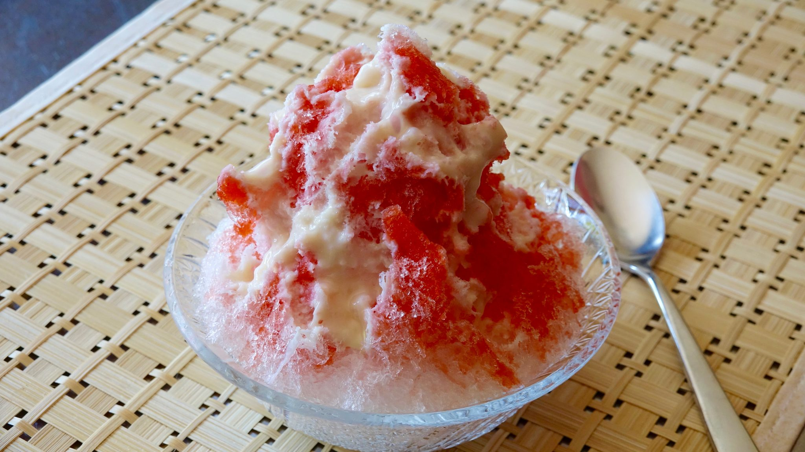
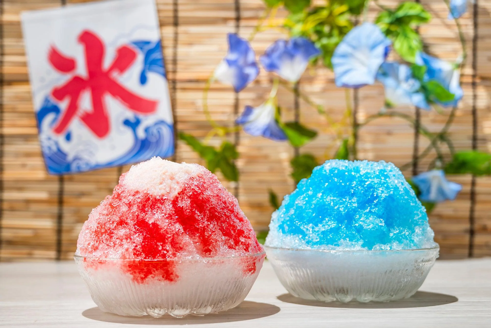
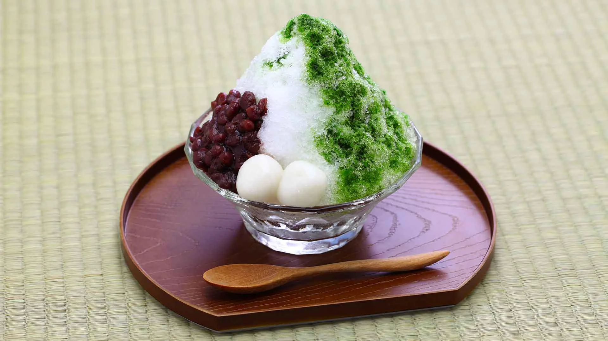

Kakigori
  
What is Kakigori?
Kakigori is quite literally as the name means shaved ice. Kakigori specifically orignated from Japan, getting incredebily hot during the summer people would cool down by having some of this delicious treat.
You might think it is like a snow cone, but kakigori is completely different, the ice is shaved like snow and melts in your mouth.
Kakigori can be added with any kind of flavors. For this recipe specifically it will be strawberry and milk kakigori.
Sweet, Refreshing, and Delicious!!!
Ingredients for Kakigori
- Frozen strawberrys
- Lemon juice
- Sugar
- Ice
- Condensed milk
- Kakigori machine
How to make Kakigori step by step
- In a pot, add strawberries, sugar, and lemon juice. Cook at medium heat stirring often until boiling. Continue cooking about 3 minutes longer, and strain. Keep liquid only, and let it cool completely. (Strawberry chunks can be eaten separately as a ice cream or pancake topping.)
- Shave ice into a bowl to make a tall mound of shaved ice, according to the instructions of Kakigori machine.
- Pour 3-4 Tbsp of the strawberry syrup over the ice and drizzle condensed milk on top. Serve immediately.
- Optional: Add strawberry chunks or other toppings to make kakigori look prettier and taste better.
Enjoy!!!
Great on days where you need something to cool you off